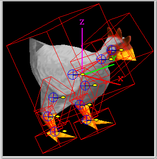

Editing Elements
Updated 25 May 2011
- QuArK Information Base
- 1. Introduction to QuArK
- 1.6. Model-editor in QuArK
|
|
Editing Elements
Updated 25 May 2011
|
Upper levels: - QuArK Information Base - 1. Introduction to QuArK - 1.6. Model-editor in QuArK |
|
1.6.11. Editing Elements |
[ - - ] |
There are a number of different types of Editing Elements or systems that are available and even specific to certain model types that are used to aid in the creation of models. The ones listed below are currently supported or in the works for future support by the 'Model-editor in QuArK'. This section covers them and their use in detail. |
|
Index |
|
Bones System |
cdunde - 26 Jul 2009 | [ Top ] |
|
Bones are used primarily for the animation, movement, of models in the same way that our bodies Skeleton bones are. The editor has one Skeleton folder where these bones are kept, if there are any. They can be applied to a single model Component, multipul components of a single model or components of another model that has been imported. A complete bone is made up of two joints, one at each end of a bone. But each joint is given a bone name. So joint1 is called NewBone1 when it is created. I know that's a little confusing, but that's the way it commonly is. When a joint is connected to another joint, the first joint is the parent of the second joint. These can be displayed in one of two ways in the tree-view, either extracted (all bones under each other) or structured each parent bone tiers on down with all of its child bones inside it as a hierarchy. Doing a RMB click over the Skeleton folder or any one bone will bring up a menu that has functions to easily switch between these two ways of displaying the bones. Even though a model may not come with its own bones, you can still create your own set of bones and store them in a QuArK Model .qkl Work File. To start adding bones simply do a RMB click in any view of the editor, which will bring up a menu, and then by going to the Bone Commands item which will cause the Bones menu to appear. The use of bones is activated by clicking on a single frame of any component and either the Skeleton folder in the tree-view, if there are bones, or by opening that folder and clicking on any of the bones inside it. Once activated, all of this systems controlling functions are located on the Editor Views RMB menu for Bone Commands. Reading their brief descriptions will give you a quick understanding of each function. For a quick reference, hold your cursor over any menu item and press your F1 key for its help box that will also give you its use information. A Skeleton folder selection causes all attached bones to move together, while a single bone selection only moves that particular bone. By selecting some vertexes in any of the editor's views and then placing your cursor over the center of a bone joint and doing a RMB click will bring up the bone menu with a function active to Assign those vertexes to that bone joint or Release them if they have already been assigned to that bone joint, this is detected and managed automatically by the editor.
The first step is to Add a Bone. To do this you must be in Vertex mode and not Linear Drag Handles mode as the bones will not be displayed. Then do a RMB click, in one of the editor's 2D views where you want to place the bone, to get the popup menu, go to Bone Commands then click on Add Bone Here. By selecting a single component in the tree-view the bone joint handle of the new bone will be assigned to that component. Otherwise it will be assigned to the first component in the tree-view. Bone joints can be spread across different components within the editor if needed by assigning their vertexes to the same joint handle. When this is done a dropdown list on the Specifics page named comp list will display all of the components and the number of their vertexes that are assigned to that particular bone joint handle. By clicking on any one of the components in that list it will automatically jump to that particular component and select those assigned vertexes. Each bone joint is a linear drag handle, where the connecting lines for attached bone joints, are the widest. All attached bone joint drag handles are where the lines meet in the middle. The middle of each handle is the center drag point, which does the lateral movements, and the single offset yellow oval handle is the corner drag handle, used to do rotation and scaling (Ctrl key) movements. When a bone is given a specific color, from the Specifics page, this oval will be filled with that color as well as the entire joint handle. This is used to help identify bone joints in close proximity. The next set of bones show how you can Continue the bones by placing your cursor over the center point of a bone's drag handle, do a RMB click and select Continue Bones from the popup menu. This can be done with any bone at any time. You will also notice how these different menu functions will become active when they can be used properly. The third set of bones show how to select and Assign a number of vertexes to a bone handle. First a single or multipal frames need to be selected, in the tree-view, then select a number of vertexes by doing a LMB drag in one of the editor's views over those vertexes. Now do a RMB click (or first hold the LMB button briefly for auto selection) on the center of the bone handle you want to assign those vertexes too, and select Assign / Release from the popup menu. The handle will automatically center itself on those vertexes. You can Set the Handle Position a couple of ways which is covered below, along with more about the built in Auto Selection Capabilities. The last set of bones demonstrate a variety of features, capabilities and Specifics Settings of the bone system, see below.
Icon Buttons : The second button will display all help data for the currently selected model format type. The third button is a toggle button, on or off, that when active changes your cursor to a paint brush that can then be used, by pressing your LMB, to pass over vertexes giving them a specific color. You can also do a LMB drag in any editor's view to select a group of vertexes and they will be assigned that same color. Changing the color is done on the frame Specifics/ Args page (see that page for more details). The forth button, when clicked, will bring up the Vertex Weights Dialog that is used in conjunction with that system. classname : This shows the name of the bone which can be changed to any name you choose in the tree-view by pressing your F2 key. Once Enter is pressed to change the name, it will update the Specifics/Args page. Bone Length : A bone can be any length you desire by either dragging one of its handles in any of the editor's views or by giving it an exact length here. comp list : This is a dropdown list. The component's name currently showing is the component that was selected last. By clicking on the down arrow to the far right, it will cause all components that have vertexes assigned to that handle to be displayed along with the number of those component's vertexes that have been assigned. Clicking on one of those components in the list, that component will become selected along with the vertexes assigned to that handle. This is a read only value and can not be change by hand, only by component vertex assignment or release. auto expand : If check, when a component is clicked on in the above dropdown list the editor jumps to that component and will expand its Frames folder and select the first frame automatically along with the vertexes assigned to that bone handle. parent : This displays the name of the bone that this bone joint is attached to, if any. If the parent's name is changed, this will update automatically, keeping things in sync for the system to work properly. It is a read only specific. color : The color bar, when clicked on, will bring up a color selection window where you can choose any color you like for that bone handle. There is also an option on the Bone Options sub-menu called Match Bone Lines Color that, when checked, the bone lines color displayed during a drag will match the handle color being dragged. Any vertexes assigned to that handle will be displayed in that same color. position : This is the exact 3D position of a bones handle that gets updated at the end of each drag, or an exact position can be set here. offset : Sometimes a bone's handle can be in the way of other things or not set exactly where you want it. Here an offset 3D value can be entered, for x, y and z, to reposition that handle in relation to any vertexes assigned to it. Be advised that any rotation will be based on its offset position, which is the center point of that handle. scale : Here the size of a bone's handle can be set to make it bigger, to see other bone's handles attached to it, or smaller, as detail work so requires. These settings have no effect on rotation, since that is based on the center point of a handle. Vertex Weight Colors : Some model formats use additional, more advanced, special display and movement systems. use weight bone sel : When checked, it puts bone selection into a special mode allowing you to add or remove bones to the selection without having to use the Ctrl key. show weight colors : When checked, if component has vertex weight coloring they will show. If NOT checked and it has bones with vetexes, those will show. auto apply changes : When checked, applies all bone weight settings for any currently or additional selected vertexes using the linear handle or applied by the paint brush. (bone name) weight (value) : The arrows are used to set a bone's vertex weight value. The total value of a single vertex MUST = 1.0 to be valid. Meaning if you have a particular vertex assigned to three different bones then all three of its values must add up to 1.0 no more no less. A value can also be entered by hand. A group of selected vertexes can be set to the same basic value and then changed individually on the Vertex Weights Dialog (see forth button above for access to that dialog). (bone name) weight (color) : This color corresponds to the above bone's vertex weight value. When the value changes the color changes and visa versa. So you can change the value by changing this color also. These colors are used as a guide to help see the different settings in the editor's views. Auto Selection Capabilities :
That is because your selection in the tree-view does not meet the above criteria and you simply need to make the correct selection. Key frames Movement : (not dependable at this time) Bone Lines & Vertex Colors : When the Skeleton Group folder is selected all of the lines share the same color as the drag handle, all the way down line for any connected bones that are also being moved or rotated. Where as for a single bone, only its lines, matching the drag handle, and any connecting bone handles will display their respective handle color. For any bone's that are using the default colors, those colors will be reverse when a drag is being made, also when a single bone or bones are selected those lines will become the default blue color, as long as there are no frames or other folders selected as well. Any vertexes assigned to a bone handle will be displayed using that same handle's color. Releasing or re-assigning vertexes to another handle will change their display color respectively. |
|
Bounding Boxes |
cdunde - 25 May 2011 | [ Top ] |
|
 Bounding boxes, or bboxes, are fairly simple and straight forward. They are a box area that surrounds the entire model, or sections of it, for each animation frame of that model. Something like Bound Frames which is an old QuArK system that is not really used any more. The existence of bboxes can be use for determining the collision or hit area of a model. Method 1) can be done in a number of different ways in QuArK, the most basic is by giving just two vectors, each consisting of three values representing an x,y,z point in 3D space. One vector gives the minimum point and the other the maximum point. Using these two vectors a 3D box can be created that encloses the model for that frame. This is the method used by models with and without bones. Two other methods, for models without bones, but may consist of one or more components, or sections, are: Which ever method is used, the data is stored in the
editor.ModelComponentList['bboxlist']
using different key names. |
|
Bound Frames |
cdunde - 25 May 2011 | [ Top ] |
|
Bound frames are like Bounding Boxes but is an old QuArK system that is not really used any more. We only mention it here because sometimes you may see them when you open a Quake 3 .md3 model directly using QuArK. There is now a Model Importer that handles those much better. |
|
Tags System |
cdunde - 16 Oct 2009 | [ Top ] |
|
In the editor, these are displayed as dark purple dots, or bright red if they are selected. One or more can be selected at the same time. RMB click over one to get its popup menu. To add a new tag, select one component in the tree-view, do a RMB click in one of the editor's 2D views to get a popup menu and select Tag Commands > Add Tag Here. You can then rename the tag in the tree-view. To delete a tag, do a RMB click over the tag in the tree-view or one of the editor's views to get its popup menu and select Delete this tag. do NOT use any other Delete menu item as they will not properly remove the tag and all its hidden data, causing problems. Tags are primarily used for Quake 3 model files ( .md3 ). Their purpose is to link one .md3 model section to another .md3 model section. When all these sections have been imported to the editor, in their proper order, they can then be put together by the use of their tags to create a single complete model. The process of putting these pieces together is done automatically by the plugins\ie_md3_import.py file when the final .md3 file is imported. For the most part, tags are used for the games player models that each person uses to represent them selves in the game. They are also used in the player's weapon .md3 models to attach the weapon to that model and any additional parts to the weapon. Each player model consist of three parts or .md3 models. The head.md3, the lower.md3 and the upper.md3 in that order. All three are kept in a single folder with the name of that player model. The folder also contains other files pertaining to that specific model. They are:
The animation.cfg files are text files that can be edited, changed, in the QuArK Model Editor and, once saved, those animation sequence changes can immediately be viewed in the editor. This is covered in more detail in the Animation CFG section below. But first, a few more things about tags need to be covered. Think of a tag as a folder. In each tag are its tag frames which correspond with the model's animation frames, one tagframe each. A tagframe contains two pieces of data, its rotation matrix and its origin or x,y,z position in 3D space which you will see in its Specifics/Args-view. The position of the Tag can be changed by changing the three values shown there. It will also change all the other tagframes of that tag automatically by the same movement amount, because these must remain consistent or the model would come apart. Tags can also be changed by placing your mouse cursor over one, holding down on your LMB and dragging the tag to its new position in any of the editor's views, updating its origin that you see in its Specifics/Args-view.
Animation CFG :
You will notice in the editor's tree-view that the model's folder name is added in front of each of its tag names, as shown at the top of its Specifics/Args-view to the right for the tag_torso. This keeps the tags of one model from being overwritten by another model. Doing it this way allows you to import more then one .md3 model into the editor, if so desired. Tags By clicking on one of those names in the list, it will jump you to that tag or component and select it. AnimationCFG File
To save a hard copy of the cfg file click Save As in your external editor, name it animation.cfg and select a place to save it at. Later you can move that new file to the model's folder BUT be sure not to overwrite your original file with that same name. Play list upper/lower
|
|
Copyright (c) 2009, GNU General Public License by The QuArK (Quake Army Knife) Community - http://quark.sourceforge.net/ |
[ - Top - ] |